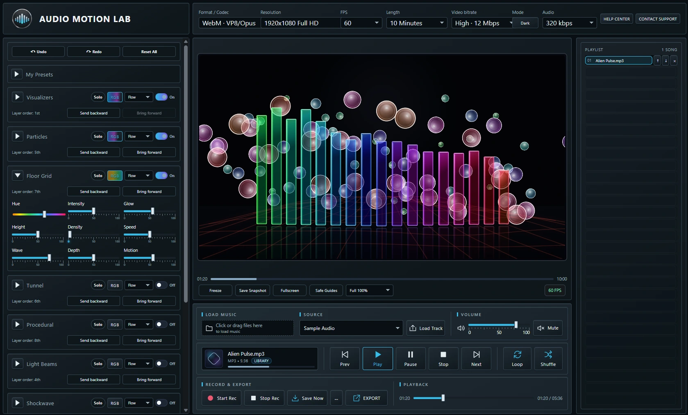
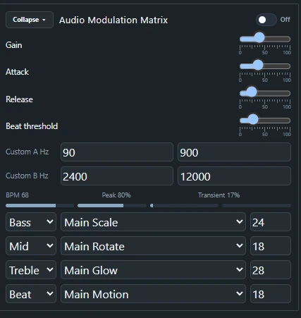
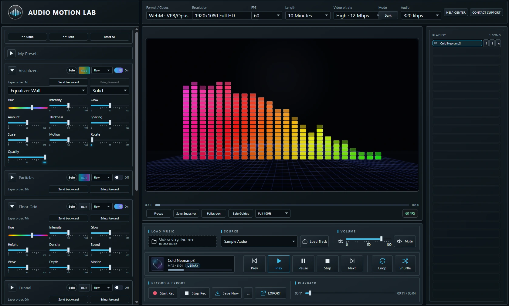
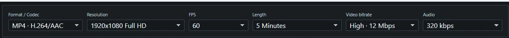
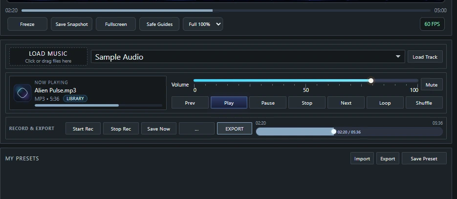

Make music videos that move with the beat.
Load a song, pick a visualizer and watch it move with the music. Start with bars or layer tunnels, particles and fractal patterns. Use your own music or pick from the 102 included tracks.
The Windows app includes a guided tutorial and an interface in 12 languages.

Build the look one layer at a time.
Mix bars, tunnels, particles, floor grids and light beams. Add a fractal kaleidoscope that changes shape with the beat, or use your own image or video as a background.

Decide what moves with the music.
Make a tunnel pulse with the bass or a pattern flash with a drum hit. Choose which sounds drive each effect, then tune how quickly it responds.

Add your title, artwork or logo.
Set where it appears, how it moves and how much of the scene shows through. Save a look as a preset so you can use it again on another track.


Render a video or record a performance.
Render a song or playlist frame by frame as a YouTube-compatible WebM video, up to 4K at 60 fps. You can also record your changes as the song plays and replay them during export. GIF and PNG image sequences are available too. Rapidfire gives each queued track its own randomly generated show and saves a separate video for each one.
See Audio Motion Lab in action.
Watch a guided tour of the visual engine, audio-reactive controls, layers and built-in recording and export workflow.
Watch on YouTube